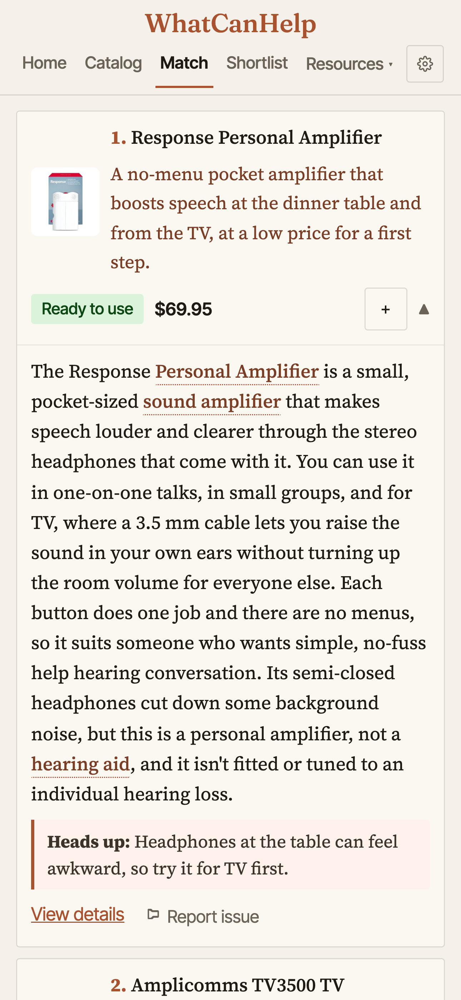
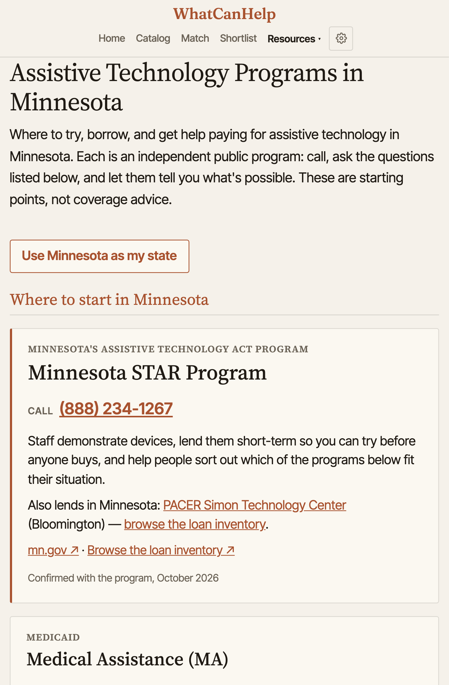
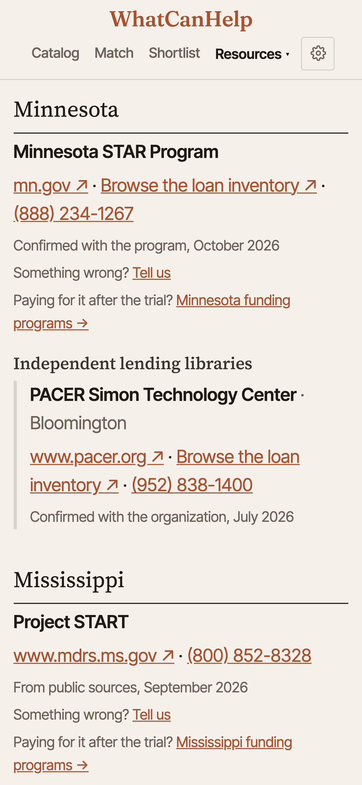
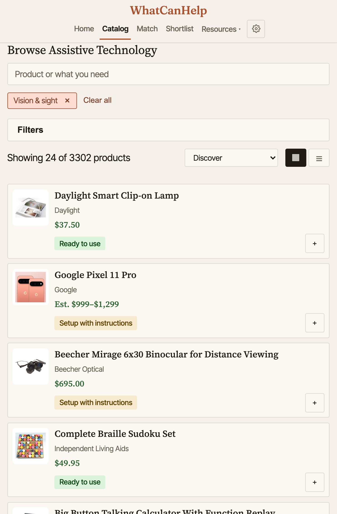
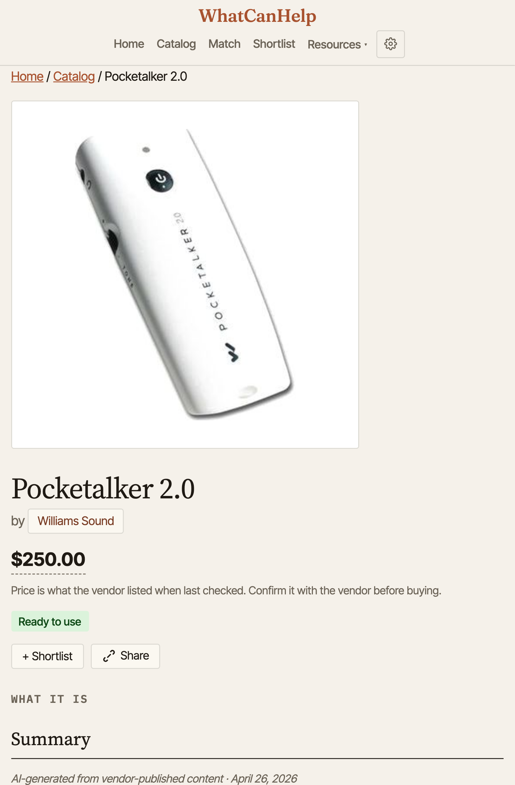
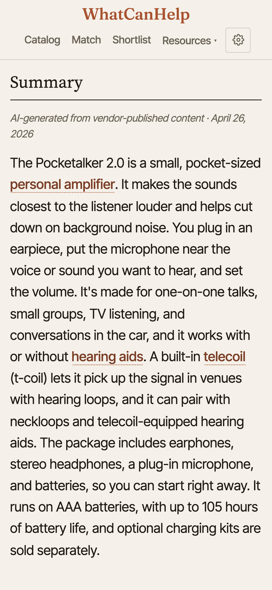
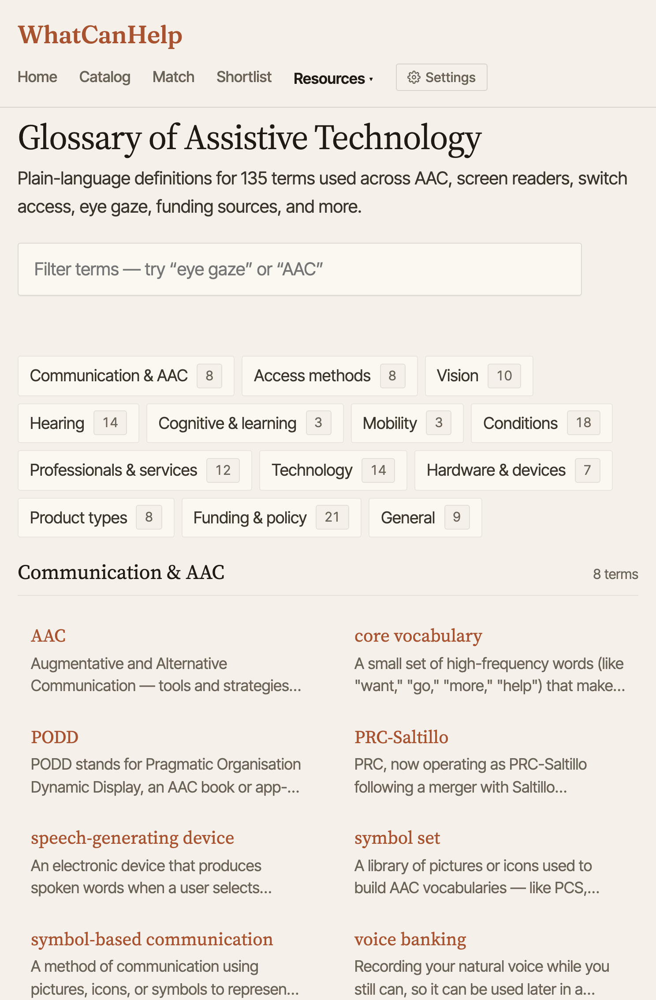
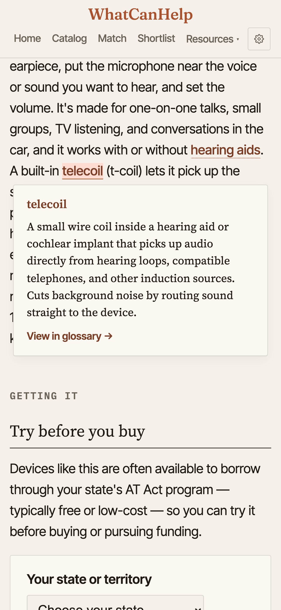
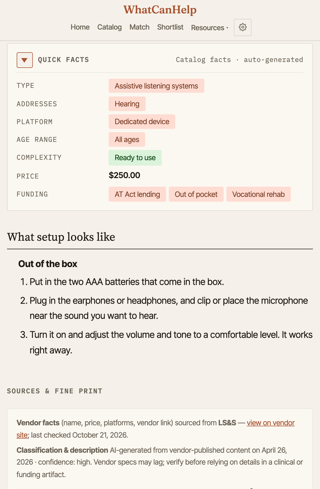
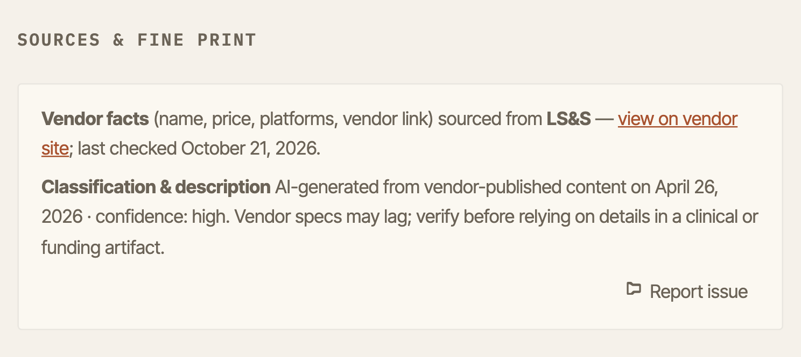

Slide 1 of 10: WhatCanHelp
On the slide: Finding assistive technology, what it costs, and how to pay for it. Jason Marsh, a personal project. https://whatcanhelp.com. Scan to follow along.
What Jason said: Thanks for having me. I'm Jason Marsh, Director of Technology at the Lighthouse in Duluth. WhatCanHelp is a personal project, built on my own time. It came from seeing how hard it is for families, and the professionals helping them, to work out what exists, what it costs, and how to pay for it.
Slide 2 of 10: A free, current catalog of assistive technology.
On the slide: whatcanhelp.com

What Jason said: It's a free catalog of assistive tech, pulled from vendors and kept current automatically. There are no ads, no affiliate links, and no accounts.
Slide 3 of 10: Not sure where to start? Match asks a few questions.
On the slide: whatcanhelp.com/intake



What Jason said: If you don't know where to start, Match asks a few questions about the situation. Here, someone's dad is 82, has trouble following conversations at dinner and hearing the TV, and isn't ready for hearing aids. Each result has a plain-language description, a complexity rating, and the price.
Slide 4 of 10: Every state has its own page.
On the slide: whatcanhelp.com/funding


What Jason said: Every state has its own page: where to try, borrow and get help paying. This is Minnesota's. The STAR entry was confirmed with the program this month. That kind of feedback is what keeps it accurate.
Slide 5 of 10: Try it before you buy it.
On the slide: whatcanhelp.com/borrow


What Jason said: Before anyone buys anything, it points them to their state's loan program. For Minnesota that's STAR, with its online loan library, plus PACER in Bloomington.
Slide 6 of 10: More than 4,500 products, updated nightly from vendors.
On the slide: whatcanhelp.com/browse


What Jason said: Everything is browsable by need. This is Vision & sight, about 3,300 of them on its own. Every card shows the maker, the current price and how much setup it takes.
Slide 7 of 10: Every product gets a plain-language summary.




What Jason said: Vendor pages are written to sell. Each summary is generated from the vendor's own published content and rewritten in plain language: what it is, who it helps, and how it's used. It's labeled AI-generated and dated, and technical terms like telecoil link to the glossary.
Slide 8 of 10: 135 terms, explained where they appear.




What Jason said: Jargon is its own barrier. The glossary has 135 terms in 13 groups, from AAC to funding and policy. On product pages, terms like telecoil are underlined, and tapping one explains it right there, without leaving the page.
Slide 9 of 10: Tagged by need, type, platform, age, complexity, price and funding.




What Jason said: Each product is classified across the same dimensions professionals think in, so a search for a hearing need finds hearing products. The complexity rating says up front whether it's ready to use or needs setup with instructions. Every page says where its facts came from, when they were last checked, and how confident the classification is, with a reminder to verify before clinical or funding use. Corrections from people like you are how it gets better.
Slide 10 of 10: Questions?
On the slide: https://whatcanhelp.com, jason@marsh.city
What Jason said: I'd love to hear what's missing or wrong, and I mean that. Email me anytime at jason@marsh.city. Happy to take questions.